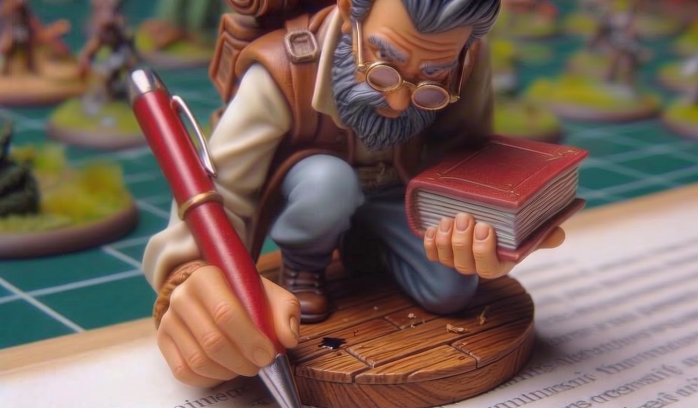
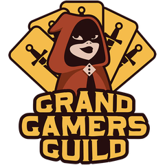
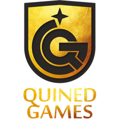

A determined, keen eye for easily overlooked omissions and errors.
Editing & Proofreading
Freelance Editor and Proofreader
Eric Selander
Specializing in Board Games
Let's do this!
Board game editing with a player's perspective
In 2004 I purchased Heroscape and discovered the modern board game hobby! Since then, I've purchased, learned, taught, and played hundreds of games. I'm combining a wealth of board game knowledge with exceptional editing expertise.
If you're looking for someone highly skilled to refine your rulebook and other game content, I can cover or assist in the stages of line editing, copy editing, and/or final proofreading.
What I focus on
- Clarity
- Consistency
- Readability
- Organization
- Formatting
- Grammar
- Spelling
- Punctuation
My approach
I analyze rulebooks and other content from particular assumed perspectives, both of the inexperienced player and the “rules lawyer.”
Editing expertise combined with experience learning and teaching hundreds of modern board games.
I love helping make board game content as polished and user-friendly as possible.
Publisher acclaimed
“Eric's work was unparalleled. His clear and timely communication and efficiency demonstrated a high level of professionalism and genuine care for the integrity of my project. When I need rulebook proofing and editing, I won't go to anyone else.”

Marc Specter — CEO, Grand Gamers Guild“Eric managed to discern mistakes that no one else had noticed and helped clarify details that even we had overlooked.”

Rafaël Theunis — General Manager, Quined Games“He didn't just look at the text in isolation, but made sure to understand the whole game with all its intricacies.”
Jonathan Fryxelius — Game Designer, FryxGames
“Eric has been a lifesaver and a delight to work with — incredibly responsive, timely, and an expert in English grammar and board games. He went above and beyond, providing excellent feedback on the rulebook and cards, and patiently edited every revision I sent his way.”
Leonie Grundler — Lioness Games